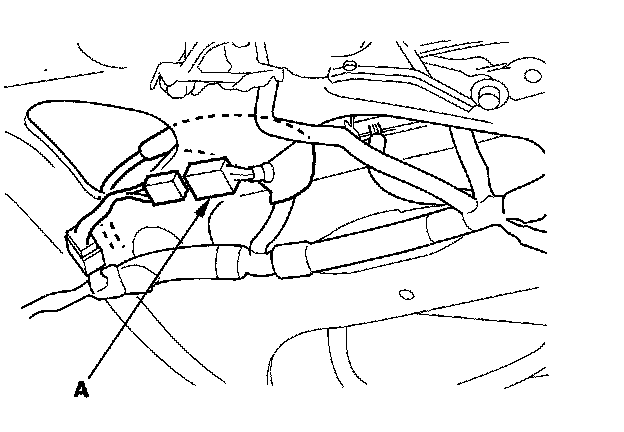
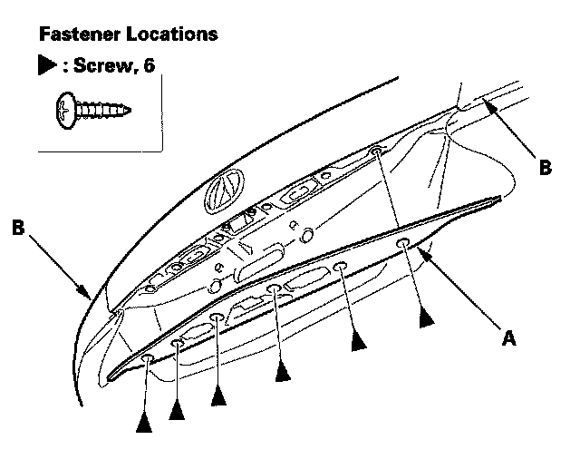
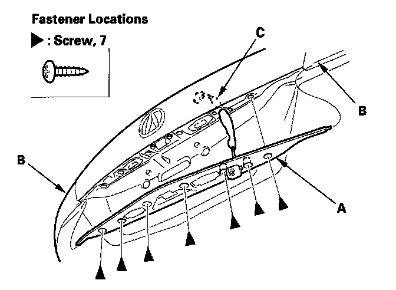
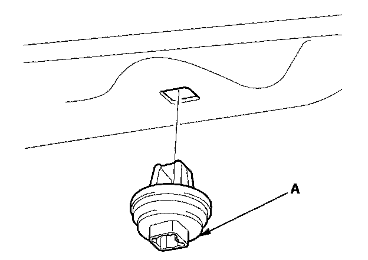
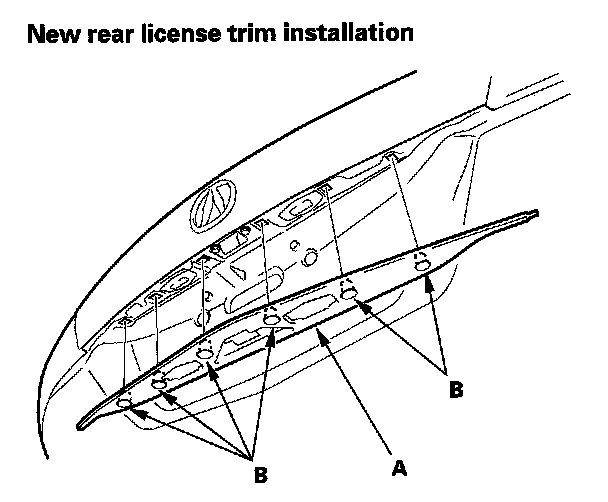

License Plate Frame: Service and Repair
Rear License Trim ReplacementNOTE:
- Put on gloves to protect your hands.
- Take care not to scratch the tailgate.
1. With navigation system: Remove the tailgate lower trim panel.

2. With navigation system: From inside the tailgate, disconnect the rear camera unit connector (A).


3. Remove the screws, and release both ends of the rear license trim (A) from the inner taillights (B), then remove the trim. If equipped, pull the rear camera unit harness (C) out.

4. Remove the screw grommets (A) from the tailgate.
NOTE:
- If the screw grommets cracked excessively, replace them with new ones.
- If the screw grommets are damaged or stress-whitened, replace them with new ones.
- If a new rear license trim will be installed, remove all of remaining screw grommets on the tailgate and discard them. The screw grommets have been installed to the new rear license trim with screws.

5. Install the trim in the reverse order of removal, and note these items:
- With navigation system: Make sure the rear camera unit connector is plugged in properly.
- If a new rear license trim assembly (A) is to be installed, hold the trim up, and fit all the screw grommets (B) into the holes in the tailgate, then push on the trim until the grommets snap into place.